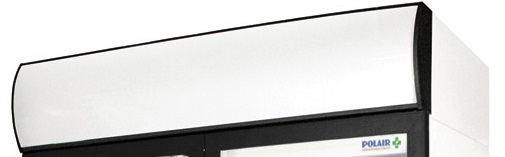
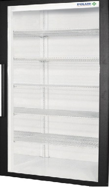

Premium Series 2026
Bespoke ColdMaster
Профессиональное решение для хранения. Система многопоточного охлаждения поддерживает идеальный микроклимат, сохраняя свежесть продуктов в два раза быстрее.
Энергопотребление: A+++


Блок управления
Сенсорная панель с точной настройкой температуры до 0.1°C.

Инверторный мотор
Тихая работа и сниженное на 40% потребление электроэнергии.